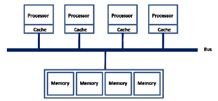
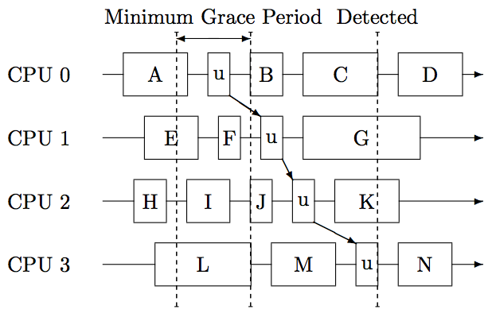

Multiprocessor Coordination
CS422/522 Lecture 16
12 November 2014
Last updated: 12 November 2014
Recap: Locks in xv6 (and JOS)
acquire(struct spinlock *lk)
{
while(xchg(&lk−>locked, 1) != 0);
}
release(struct spinlock *lk)
{
xchg(&lk−>locked, 0);
}
Question: Why XCHG in release()?
XCHG as a test-and-set
test_and_set(addr)
{
int initial = *addr;
*addr = 1;
return initial;
}
Bus-based shared memory
- each addr in cache as either shared (S) or exclusive (X)
- invariant: addr X in exactly one cache OR X in no caches and has same value in all S caches and in memory
Bus-based shared memory
- Reads:
- CPU can read from its own cache if S or X
- Otherwise, set cache to S, any cached X to S, fetch from X cache or memory (uses bus)
- Writes:
- CPU can write to its own cache if X
- Otherwise, set cache to X, invalidate other caches (uses bus)
Why does this matter?
acquire(struct spinlock *lk)
{
while(xchg(&lk−>locked, 1) != 0);
}
- Since XCHG writes atomically, addr must be X in cache
- If multiple CPUs doing XCHG, bus constantly busy
- Hurts performance even on CPU with lock
- xv6 spinlock does not perform well under contention
Test-and-test-and-set
acquire(struct spinlock *lk)
{
while((lk->locked != 0) || (xchg(&lk−>locked, 1) != 0));
}
- First test is ordinary load instruction (S in cache OK)
- Only if succeeds move on to expensive XCHG
- Example: 8 CPUs all want lock
- 1 gets lock, 7 others call XCHG once
- spin on LOAD, S in caches so no bus
- release lock; 1 gets lock, 6 call XCHG once
- 8 + 7 + ... = O(n^2) bus lockings
Ticket Locks
struct lock {
int next = 0;
int serving = 0;
}
acquire(struct lock *lk)
{
int mine = fetch_and_increment(&lk->next);
while(mine != lk->serving);
}
release(struct lock *lk)
{
lk->serving += 1;
}
Ticket Locks
- Single atomic instruction (no spinning)
- Still O(n^2) bus transactions. Why?
- release() invalidates lk->serving in all caches
- Same pattern as test-and-test-and-set
- Problem: all CPUs spin on the same location
Array Locks
struct lock {
int next = 0;
int slots[LEN] = {1}; // 1 = has_lock, 0 = must_wait
}
acquire(struct lock *lk)
{
int mine = fetch_and_increment(&lock->next);
while(slots[mine % LEN] == 0);
slots[mine % LEN] = 0; // reset for next time
}
release(struct lock *lk)
{
slots[(mine + 1) % LEN] = 1;
}
Array Locks
- Down to O(n) in bus transactions! Why?
- release() invalidates only a single cache
- Caveat: assumes slots aligned with cache lines
- But O(n) in space per lock
MCS Lock
acquire(lock *lk, qnode *I) {
I->next = NULL;
qnode *predecessor = fetch_and_store(lk, I)
if(predecessor != NULL) // queue was non-empty
I->locked = 1;
predecessor->next = I;
while(I->locked == 1); // spin
}
release(lock *lk, qnode *I) {
if(I->next == NULL) // no known successor
if(compare_and_swap(lk, I, NULL)
return;
while(I->next == NULL); // spin
I->next->locked = 0;
}
MCS Lock
- Preserves O(n) bus transactions from array lock
- O(1) space overhead - each process with one qnode, uses for any lock it's waiting on
Lock-free Data Structures
Consider a typical stack
void push(elem *e) {
e->next = top;
top = e;
}
elem *pop() {
elem *e = top;
top = e->next;
return e;
}
Clearly not concurrency-safe!
Can we make it safe without locks?
Compare-and-swap
bool cmpxchg(int *addr, int old, int new)
{
int was = *addr;
if(was == old)
*addr = new;
return was;
}
A Lock-free Stack
void push(elem *e) {
while(true) {
e->next = top;
if(cmpxchg(&top, e->next, e) == e->next)
break;
}
}
elem *pop() {
while(true) {
elem *e = top;
if(cmpxchg(&top, e, e->next) == e)
break;
}
return e;
}
Why lock-free (or not)?
- Pros
- Preemption not an issue - just update and retry
- Readers don't need any extra synchronization
- Cons
- Writing lock-free data structures is complicated
Read-Copy Update
- Extends the swapping idea of lock-free
- Two goals:
- Make updates appear atomic to readers
- Use any other scheme (locks, lock-free, etc.) to coordinate between updaters
- Key idea: leave old data for readers, don't update in place
- Update by copying data, atomically swapping pointers
Asynchronous Free
When is it safe to free the old data?
Simple answer: After everyone is done using it.

Detecting "Quiescent" States
One approach: CPU hopping

RCU in Practice
- Kernel module unloading
- Anyone already using module can continue
- Any new attempt to use will fail
- See paper for more details
Lab 5 Grades
- Code: 72/75
- Questions: 3/3
Lab 6
Lab 6 must be completed by tomorrow (Thursday).Lab 7
- Due December 4th. No late days.
- E-mail us what you will be doing and (if applicable) who you are working with.
- Default project (E1000 interrupts instead of polling) is not sufficient for group project - need to do more.
Next Time
Monday 1:00PMDistributed Systems